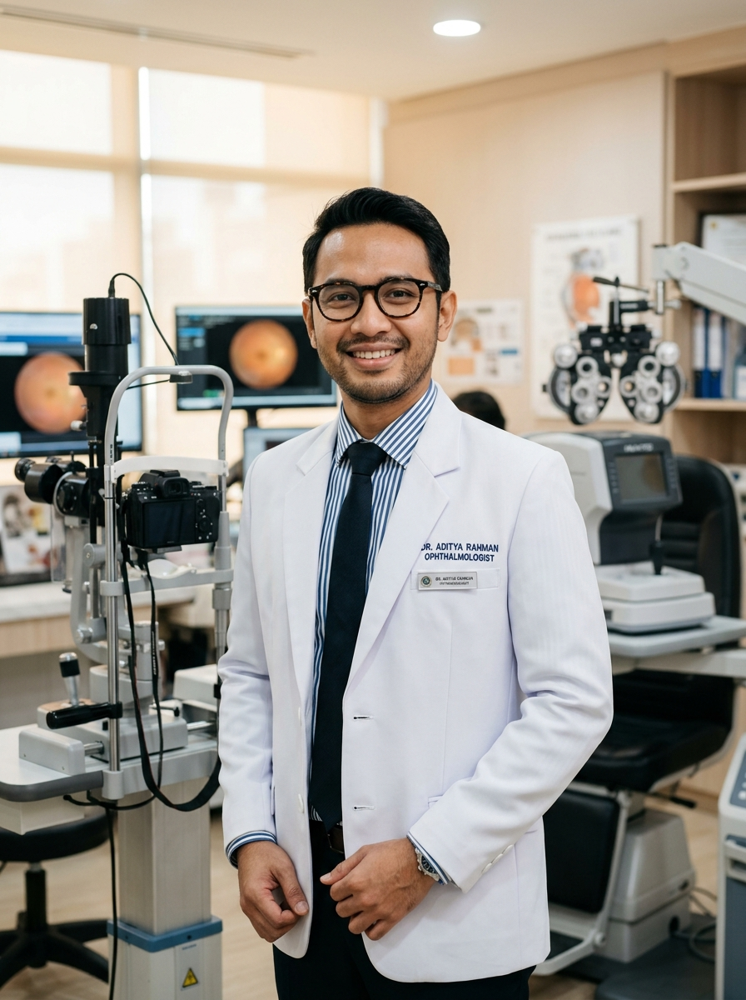
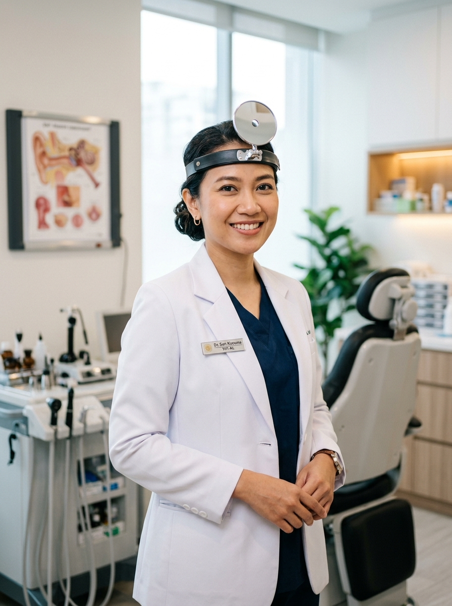

Penyakit Dalam
dr. Ahmad Fauzi, Sp.PD
Spesialis Penyakit Dalam (Internis)
Senin - Jumat: 08.00 - 14.00 WIB
RS Awal Bros Dumai menghadirkan tim dokter spesialis dan sub-spesialis terkemuka yang berpengalaman, berkomitmen tinggi, dan siap memberikan layanan medis komprehensif untuk Anda.
Spesialis Penyakit Dalam (Internis)
Spesialis Anak (Pediatri)
Spesialis Jantung & Pembuluh Darah
Spesialis Kebidanan & Kandungan (Obstetri)
Spesialis Bedah Umum
Spesialis Saraf (Neurologi)

Kesehatan MataSpesialis Mata (Oftalmologi)

THT & Kepala LeherSpesialis Telinga Hidung Tenggorok (THT)